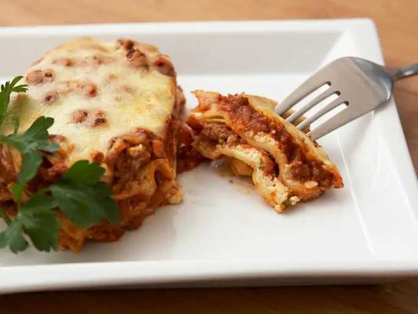

Фото: Breville USA, CC BY 2.0
.jpg){kind=link}
Лазанья с мясом
Слои пасты, соуса болоньезе и бешамеля с сыром, запечённые в духовке
120 мин6 порц.744 ккал на порциюБ 35 · Ж 44 · У 51Итальянская кухня
Продукты на 6 порц.
- Макароны250 г
- Говяжий фарш600 г
- Лук репчатый1 шт
- Морковь1 шт
- Чеснок2 зуб.
- Томаты в собственном соку2 банка
- Томатная паста1 ст. л.
- Оливковое масло2 ст. л.
- Сливочное масло60 г
- Мука пшеничная2 ст. л.
- Молоко3,5 стак.
- Мускатный орех1 щеп.
- Сыр твёрдый150 г
- Пармезан по желанию40 г
- Соль2 ч. л.
- Перец чёрный молотый1 щеп.
Как готовить
- Соус болоньезе: обжарьте мелко нарезанные лук, морковь и чеснок на оливковом масле 7 минут, добавьте фарш и жарьте 10 минут. Положите томаты и пасту, посолите и тушите на слабом огне 30 минут.
- Бешамель: растопите сливочное масло, всыпьте муку и жарьте 1 минуту, помешивая. Влейте холодное молоко тонкой струйкой, постоянно мешая венчиком, и варите на слабом огне 5-7 минут до густоты сметаны. Посолите, добавьте мускатный орех.
- Для пасты нужны листы лазаньи (они продаются в разделе макарон). Если листы требуют варки, отварите их по 3-4 штуки 3 минуты. Листы без варки используйте сухими.
- Разогрейте духовку до 180 °C (средний жар). На дно формы налейте немного бешамеля.
- Выкладывайте слои: листы, мясной соус, бешамель, горсть тёртого сыра. Повторите 3-4 раза. Верх: листы, бешамель и весь оставшийся сыр с пармезаном.
- Накройте фольгой и запекайте 25 минут, затем снимите фольгу и запекайте ещё 15-20 минут до золотистой корочки. Нож должен легко проходить через листы.
- Дайте постоять 15 минут, иначе слои расползутся при нарезке.
Совет. Соус должен быть жидковатым: сухие листы впитывают влагу. Готовую лазанью можно хранить в холодильнике 2 дня и разогревать порциями.